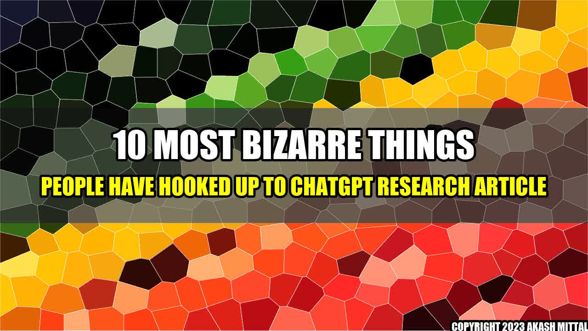

10 Most Bizarre Things People Have Hooked Up To ChatGPT
It was just another ordinary day when ChatGPT was launched, but little did anyone know that it would change the way we communicate forever. ChatGPT started as an online chatbot with the capability to have natural conversations with users. However, as technology progressed, people started using it for bizarre reasons. Here are the 10 most bizarre things people have hooked up to ChatGPT:
- Chatting with ghosts
- Finding love through ChatGPT
- Discovering conspiracy theories
- Getting psychological help
- Teaching ChatGPT how to swear
- Using ChatGPT as a personal chef
- Asking ChatGPT how to commit the perfect crime
- Creating a ChatGPT-powered magic 8-ball
- Finding the meaning of life
- Having deep philosophical conversations with ChatGPT
As we can see, people have been using ChatGPT in ways that were never intended. While some of these applications are harmless, others raise serious concerns. It's important to remember that ChatGPT is not a human being and cannot be held liable for any advice or recommendations it provides.
Akash Mittal Tech Article
Share on Twitter Share on LinkedIn